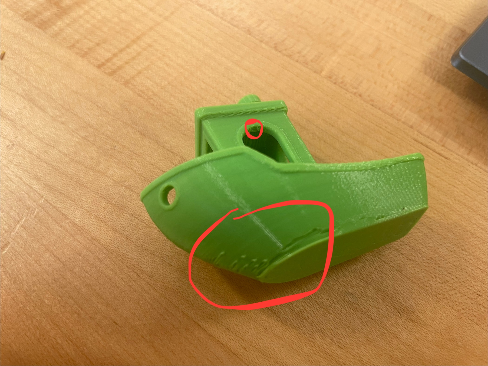

Project 1
Project Overview
The goal of the first project was to create three different prints: A personalized nametag, a calibration test, and an open source assistive device. A standard 3D printing workflow starts with Computer-Assisted Design (CAD), the design of the final product one is going to print, then transition to Computer-Assisted Machining (CAM), in which the design is printed and made into a physical product. This project focuses almost exclusively on CAM, as all designs for this project are downloaded from public libraries. The CAM process was completed using PrusaSlicer and the Prusa Mini 3D printer.
The prints made in this project each serve to introduce a different aspect of the design process. The nametag print introduces the CAM process, the calibration test portrays the limitations of the machinery, while the assistive device introduces the utility of open source libraries
Print 1: Nametag
The goal of the first print was to create a multicolored personalized nametag to serve as an easy introduction to the 3D printing process.
The 3MF project file for the project was downloaded Brandeis University's public workshop files and loaded into PrusaSlicer. After slicing, the GCode was transferred to a Prusa Mini 3D printer via USB. To allow for the nametag to be multicolored, the GCode was supposed to stop the printer at a certain point to allow for the use to switch the filament for a spool of a different color. Although the print was successful, the nametag was printed as a solid color rather than being multicolored as intended.

The 3MF file for the project includes a color change, however, when importing a 3MF file using the import dropdown rather than dragging and dropping the file into the software, the file is imported as a 3D object rather than as a project. To correctly import the 3MF project file without dragging and dropping, one must, rather than importing the file, open it as a new project.
The result of incorrectly and correctly importing the file are shown below respectively:


Base settings used for all prints:

Print 1 Reflections
In spite of the my erroneous importing of the 3MF file, the first print was overall very successful. The text of the nametag shows some minor stringing and some undesired gaps are present in the lettering, however the text remains perfectly readable. The impact of these issues could easily be mitigated by simply printing at a larger scale. The greatest lesson that can be reaped from my failure to import the file correctly is that, even if it seems that everything has been done correctly, one should always check whether everything is in order with the slicing before starting to print; Measure twice, cut once.
Print 2: Calibration Torture Test
The second print involved in this project was a calibration torture test. I chose to print the classic 3DBenchy torture test, a small tugboat with many holes, overhangs and small details to test the how accurately a printer can produce complex, difficult shapes.
The file was downloaded from the Benchy3D official website, sliced in PrusaSlicer, then printed on a Prusa Mini. Isopropyl alcohol was applied to the baseplate before printing to ensure that the print stuck, allowing for a more pure examination of printer capabilities rather than baseplate conditions. The infill setting also had to be decreased to 10% for this print, in accordance with the recommendations from the official 3DBenchy website.


Print 2 Reflection
The printed 3DBenchy showed some minor errors, however was largely satisfactory. On the bow of the tugboat, the more extreme inclines showed some structural issues, with many tears and deformities present in the final print. Additionally, some moderate stringing can be noticed throughout the print, notably across the top of the bow and on the interior of the bridge. The curved overhangs on the entrances and windows of the bridge also show some deformity at their tops. The text on the bottom of the boat is, while still legible, of poor quality. Similarly, the 3DBenchy nameplate on the back of the tugboat is practically impossible to read. Spearing some small holes throughout the print, the rest of the boat is of excellent quality. Although I used only a ruler, all of the measurements of the boat appear to approximately match the dimensions shown on the 3DBenchy website. Importantly, the holes all appeared to be correct by my approximations. Holes tend to close upon cooling in poorly calibrated prints.
The aforementioned deformities present on steep angles and overhangs are circled in red.

Correct 3DBenchy dimensions:

Source: 3dbenchy.com
Print 3: Open Source Assistive Device
The third print was an open source assistive device. The first result on the Makers Making Change Assistive Device Catalog was a set of assistive silverware holders, which I decided to print since I happened to have a spoon in my jacket pocket. I found the spoon holder, sliced it in PrusaSlicer and began printing. However, the print very quickly failed as the print became attached to the nozzle. I figured I would use isopropyl alcohol to improve the cohesion between the baseplate and the print, however when I printed again, the same issue occurred. I then realized that there simply was not enough surface contact between the print and the baseplate, so I rotated the spoon holder to stand on its flat end. This resolved the issue and the print proceeded as intended. In the future, I would be curious to examine the minimum contact area necessary for the print to succeed.
Print time was 1 hour and 6 minutes, consuming 8.56 grams of filament.

I realized only after printing this that it was meant to fit only a specific spoon from IKEA, so the spoon in my pocket wasn't a perfect fit. I also realized that I was meant to download and print a grip separately, so this doesn't make holding the spoon too much easier. Nonetheless, it is capable of holding the spoon, albeit not very well.

Webdev Reflection
To present this and all following project writeups, this portfolio site was developed. Two bootstrap templates were modified to create this website. These bootstrap templates were the Shop Homepage template and the Personal template Sublime Text was used as a text editor to write and modify HTML to perform the front end development necessary to create this site.
I have a decent background with programming in various languages, including HTML (although technically HTML is a markup language, not a programming language), so the process of designing this site wasn't especially new or difficult for me. However, it had been a while since I last developped using HTML, so I had to refamiliarize myself with some of the syntax.
Final Reflection
The minor errors that were encounted throughout this project were incredibly informative. With regard to the first print, my failure to correctly import the project files will forever remind me, with any automated tools, to check that they have been configured correctly before beginning. The repeated print failures of the third print will serve as a reminder to consider the contact area between the print and the baseplate and, more broadly, to more profoundly consider the logistics of a project before starting.
Perhaps the most import thing I've been reminded of, on a more personal note, is how much I enjoy this sort of work. Making these prints and putting together this website is exactly the kind of thing I would have done for fun when I was younger. This project has really gotten me excited for what is to come in this course.